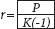

adresinde çevrimiçi görülebilen Ulusal Gelir ve Üretim Hesapları (National Income and Product Accounts – NIPA) ile Sabit Varlıklar (Fixed Assets – FA) tablolarından alınmıştır. Diğer kaynaklar aşağıda belirtilmektedir.
Şekil 1:  ve r'nin eğilim değeri (reğilim)
K, 2010'un ilk çeyreğine kadarki dönem için NIPA tablosu 1.14'ün 27'inci satırından alınmış finans dışı şirket kârları ile yıllık olarak 2008'e kadar mevcut olan ve her bir bileşenin eğilimleri doğrultusunda 2010'a kadar genişletilen Tablo 7.11'de 11'inci satırdan 17'inci satırın çıkartılmasıyla elde edilmiş finans dışı şirketler net parasal faiz ödemelerinin toplamıdır. NIPA'da belirtilen şirket kârları, fiili net parasal faiz ödemeleri düşülmüş kârlar olduğundan, faiz öncesi kâr rakamını bulmak için faiz ödemelerini tekrardan eklememiz gerekmiştir. Sonuçta, "Faiz ve Vergi Öncesi Kazanç" adıyla aşina olduğumuz muhasebe ölçütünün NIPA hesaplamalarındaki karşılığı elde edilmiştir. Bu adımı gerekli görmemizin nedeni, girişim kârı tutarını ve oranını bulabilmek amacıyla daha ileriki basamaklarda tüm sermaye için faiz karşılığını (sadece borç alınmış sermaye için ödenmiş fiili net faiz tutarını değil) düşecek olmamızdır (bkz. aşağıda Şekil 6 ile ilgili hesaplamalar).
Kâr oranının payda kısmında, ilgili yıl için yatırılmış sermaye miktarı yer alır. NIPA tablolarında yılın sonundaki sermaye stokuna yer verildiğinden, bir önceki yılın finans dışı şirketler için cari maliyet esaslı sermaye stokunu [K(-1)] kullanmamız gerekir. Yıl sonu sermaye stoku, Sabit Varlıklar (Fixed Assets – FA) Tablosu 6.1'de, 4'üncü satırda yer almaktadır. Sabit varlık verisi yıllık olarak 2008'e kadar bulunabildiğinden, geçmiş eğilimlerden yola çıkılarak 2009'a kadar genişletilmiştir.
reğilim değeri, Eviews 5 yazılımı içerisinde P ve K(-1) için 0,50 bant genişliği ile LOESS regresyonu (yerel regresyon düzleştirme tekniği) yürütülerek hesaplanmıştır. LOESS, derece 1 (doğrusal) çokterimliliğe ve yerel tricube ağırlıklandırma fonksiyonuna sahip, en yakın komşu değer türünde bir regresyondur. Verilerdeki kısa vadeli dalgalanmalara karşı hassasiyet sergilemeyen bu teknik, böylece eğilimlerin tahmin edilmesinde fayda sağlamaktadır. reğilim, P'nin eğilim değerinin K(-1)'e bölünmesi yoluyla elde edilmiştir.
Şekil 2: Şirketler kesiminde saatlik üretkenlik ve fiili/varsayımsal saatlik reel ücretler
Saatlik üretkenlik ve fiili reel ücret değerleri, Amerikan İşgücü İstatistikleri Dairesi (BLS)'nin